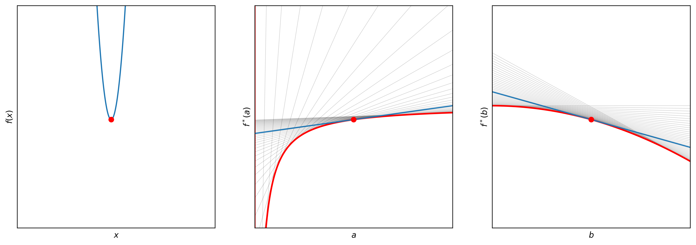

María Luján García
The Envelope Theorem is an important mathematical tool in economics, but its abstract nature can make it challenging to completely understand. This repository provides interactive visualization tools to help with comprehension. For a deeper understanding of the mathematical process, I highly recommend consulting Simon and Blume's book.
The output will look like this, and you can play with the widgets to see how the indirect function changes:

First things first:
Theorem:
Let \( \boldsymbol{x}^*(\boldsymbol{a}) \) be the solution of a problem depending on the parameter vector \( \boldsymbol{a} \). Then:
$$\frac{d}{da_i} f(\boldsymbol x^*(\boldsymbol a); \boldsymbol a) = \frac{\partial}{\partial a_i} f(\boldsymbol x^*(\boldsymbol a); \boldsymbol a)$$
Proof:
$$ \frac{d}{da_i} f(\boldsymbol x^*(\boldsymbol a); \boldsymbol a)= \frac{\partial f(\boldsymbol x^*(\boldsymbol a); \boldsymbol a)}{\partial \boldsymbol x} \frac{\partial\boldsymbol x}{\partial a_i} + \frac{\partial f(\boldsymbol x^*(\boldsymbol a); \boldsymbol a)}{\partial a_i} $$
By the first-order condition, the first term is zero, hence:
$$\frac{d}{da_i} f(\boldsymbol x^*(\boldsymbol a); \boldsymbol a) = \frac{\partial}{\partial a_i} f(\boldsymbol x^*(\boldsymbol a); \boldsymbol a)$$
Theorem:
Let \( \boldsymbol{x}^*(\boldsymbol a) \) be the solution of a problem subject to the constraints \( \boldsymbol g (\boldsymbol x) = \boldsymbol k \). Then:
$$\frac{d}{da_i} f(\boldsymbol x^*(\boldsymbol a); \boldsymbol a) = \frac{\partial}{\partial a_i} \mathscr L(\boldsymbol x^*(\boldsymbol a); \boldsymbol a)$$
Proof:
$$ \frac{d}{da_i} f(\boldsymbol x^*(\boldsymbol a); \boldsymbol a)= \frac{\partial f(\boldsymbol x^*(\boldsymbol a); \boldsymbol a)}{\partial \boldsymbol x}\frac{\partial\boldsymbol x}{\partial a_i} + \frac{\partial f(\boldsymbol x^*(\boldsymbol a); \boldsymbol a)}{\partial a_i} $$
s.t. \( \boldsymbol g(\boldsymbol x^*(\boldsymbol a); \boldsymbol a)\equiv \boldsymbol k \)
Differentiating the constraint with respect to \( a_i \):
$$ \frac{d }{d a_i}\boldsymbol g(\boldsymbol x^*(\boldsymbol a); \boldsymbol a) = \frac{\partial \boldsymbol g}{\partial \boldsymbol x} \frac{\partial \boldsymbol x}{\partial a_i} + \frac{\partial \boldsymbol g}{\partial a_i} \equiv 0 $$
Multiply by \( \boldsymbol\lambda' \) and subtract from the derivative:
$$ \frac{d}{da_i} f(\boldsymbol x^*(\boldsymbol a); \boldsymbol a) = \left[\frac{\partial f}{\partial \boldsymbol x} - \boldsymbol \lambda' \frac{\partial \boldsymbol g}{\partial \boldsymbol x}\right]\frac{\partial \boldsymbol x}{\partial a_i} + \frac{\partial f}{\partial a_i} - \boldsymbol \lambda' \frac{\partial \boldsymbol g}{\partial a_i} $$
By the first-order condition, the first term is zero, hence:
$$ \frac{d}{da_i} f(\boldsymbol x^*(\boldsymbol a); \boldsymbol a) = \frac{\partial }{\partial a_i} f(\boldsymbol x^*(\boldsymbol a); \boldsymbol a) - \boldsymbol \lambda' \frac{\partial }{\partial a_i} \boldsymbol g(\boldsymbol x^*(\boldsymbol a); \boldsymbol a) = \frac{\partial}{\partial a_i} \mathscr L(\boldsymbol x^*(\boldsymbol a); \boldsymbol a) $$
Below is a preview of the interactive visualization you can explore:

You can download the Jupyter Notebook containing all the code used to build this tool: